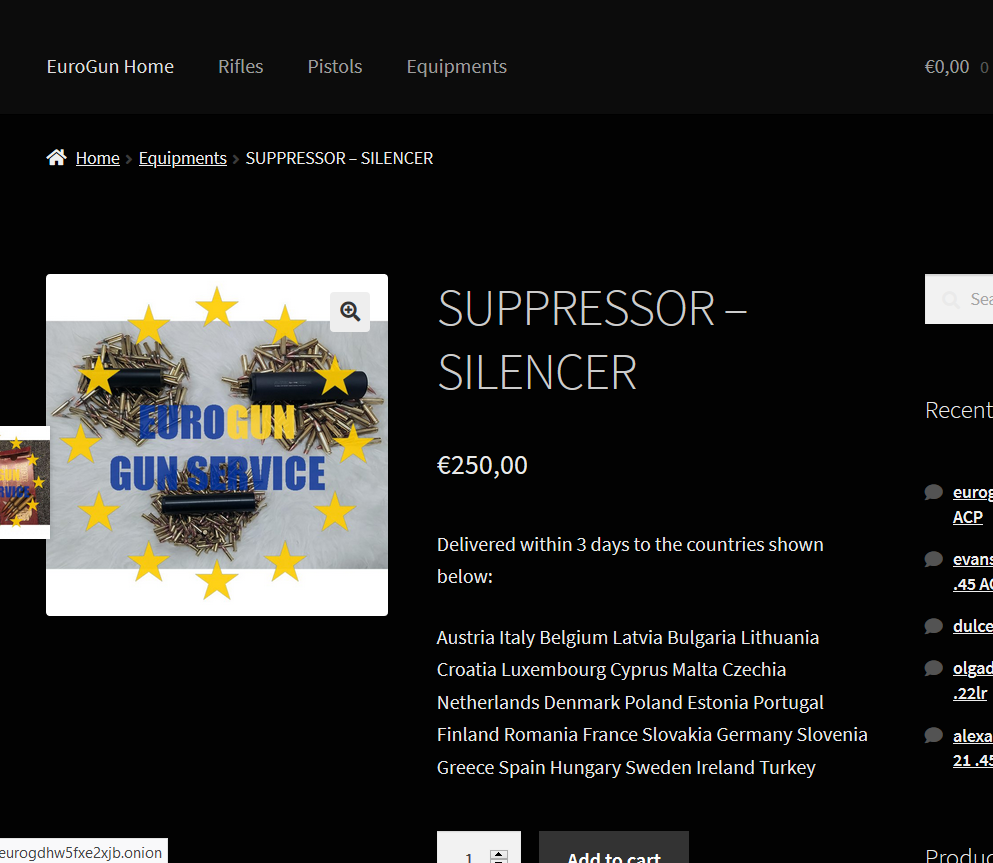
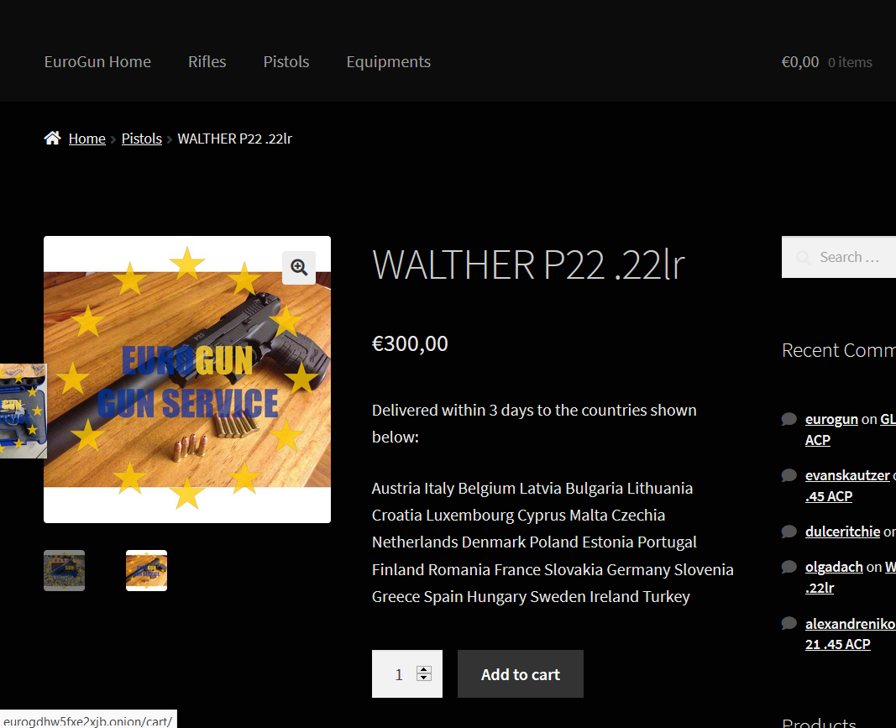
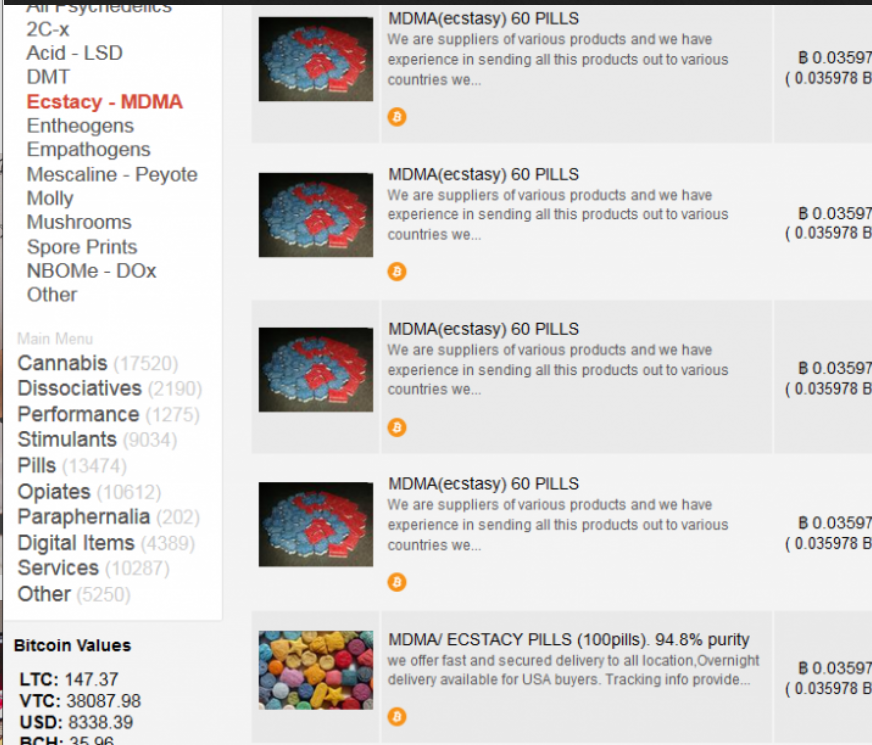
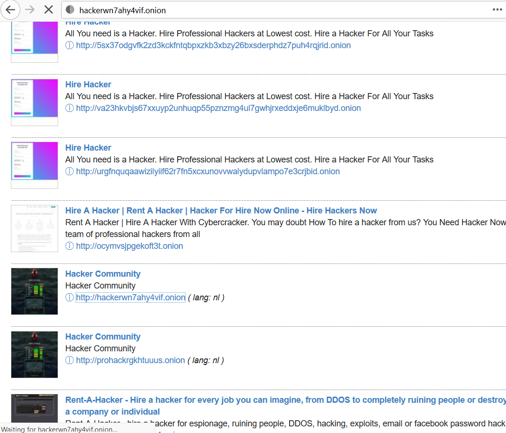
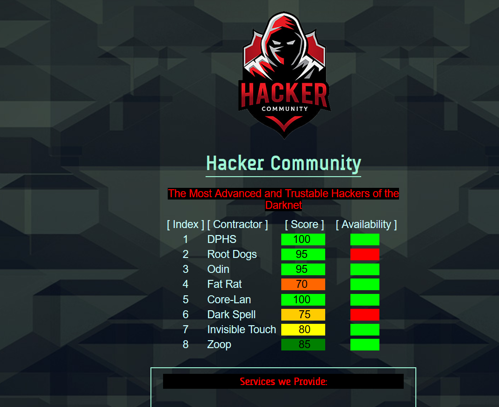
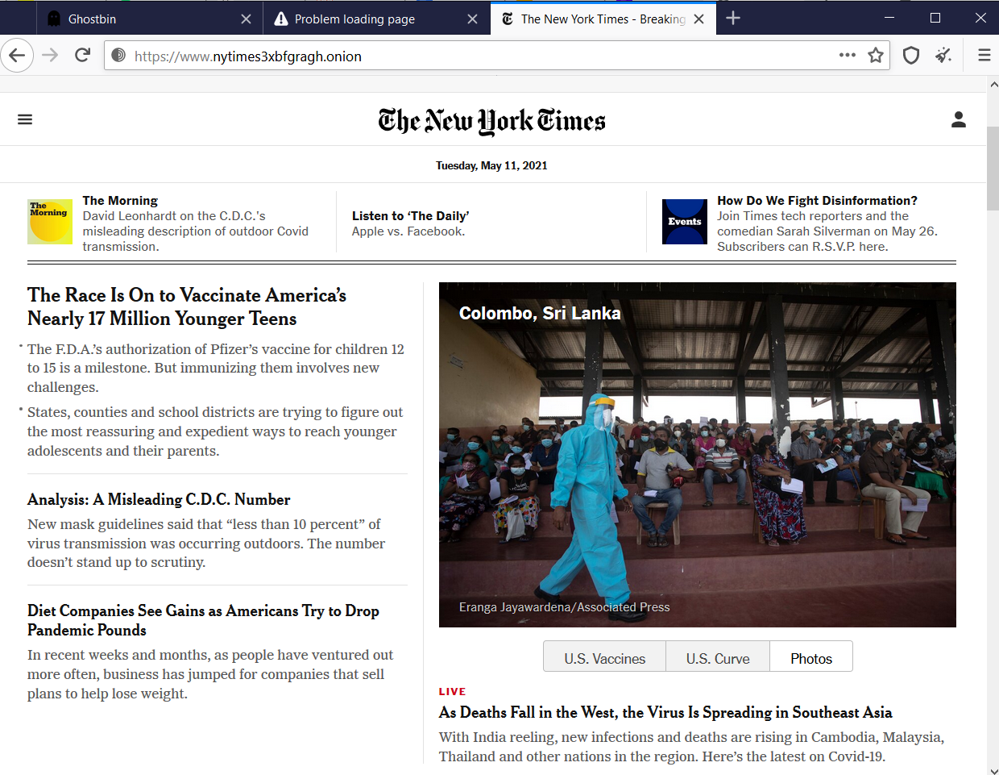
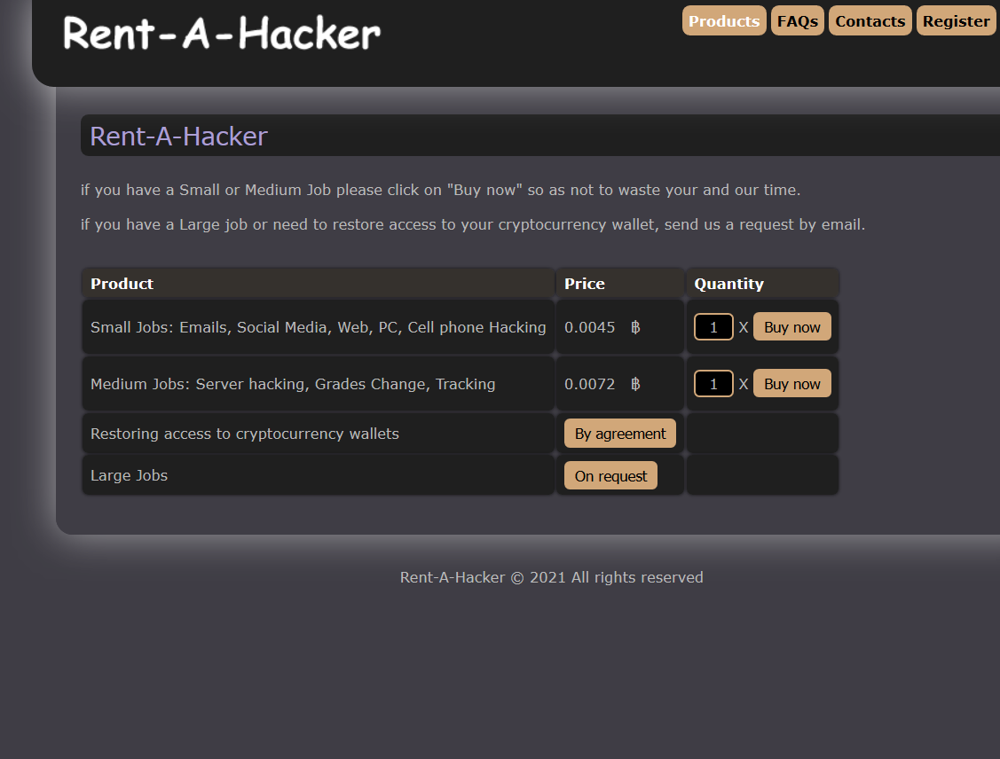

PAGINE VARIE








Questo sito può essere visitato da TOR
la pagina è a solo scopo di ricerca scolastica
Il web che tutti noi conosciamo e usiamo contiene solo una parte delle pagine realmente esistenti
Questo sito è hostato su un raspberry pi 4 a casa mia, è eccessibile tramite il circuito tor, ma bastano poche conoscenze informatiche e un qualsiasi pc per tirare su un sito nel circuito tor
Dopo queste immagnini si potrebbe pensare che questo sistema favorisca solo l'illegalità
ma ci sono aspetti essenziali per la libertà di stampa e di parola in paesi dove vige la censura, (vedi la pagina tor del NYT)